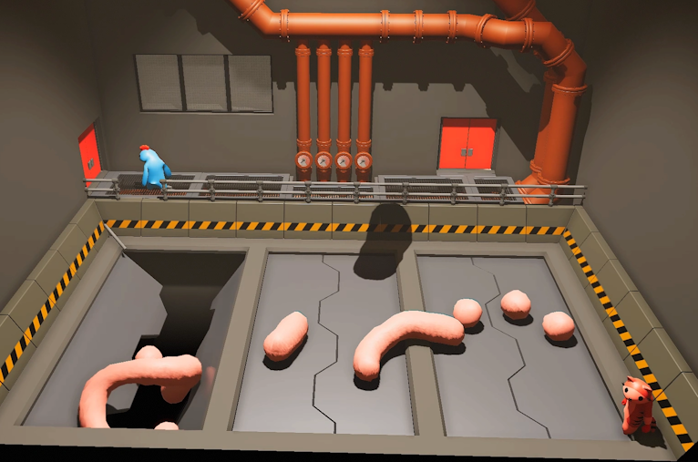
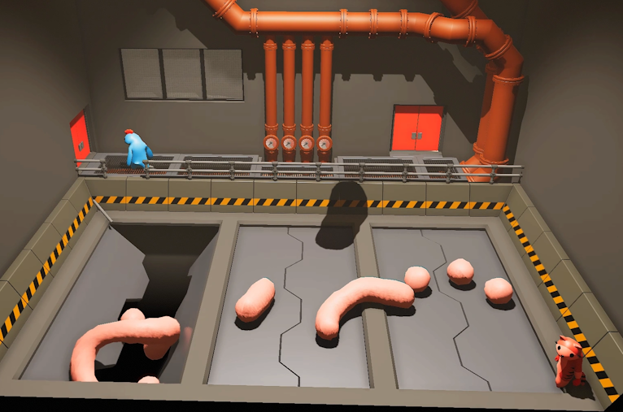
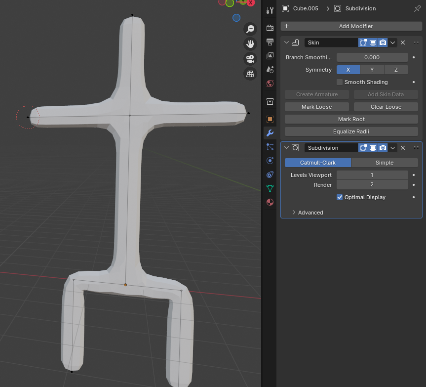
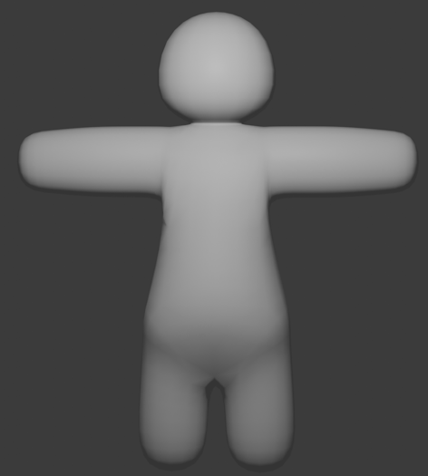
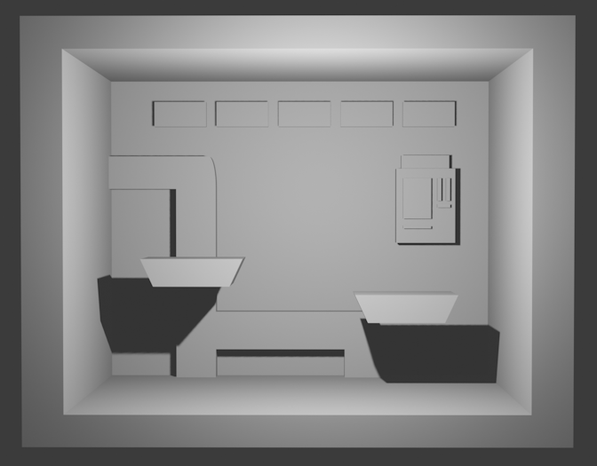
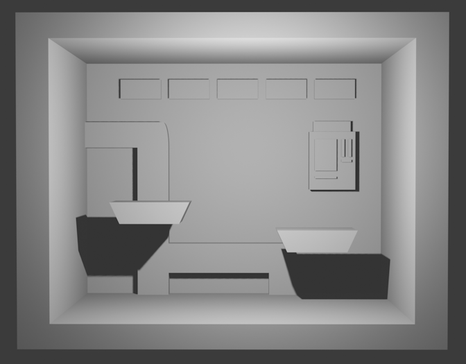
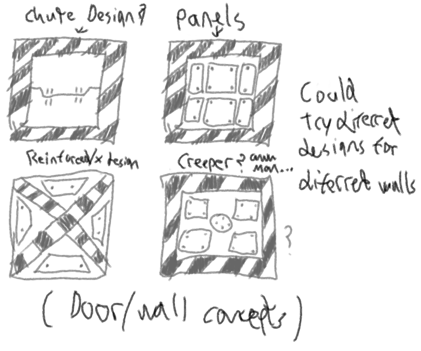
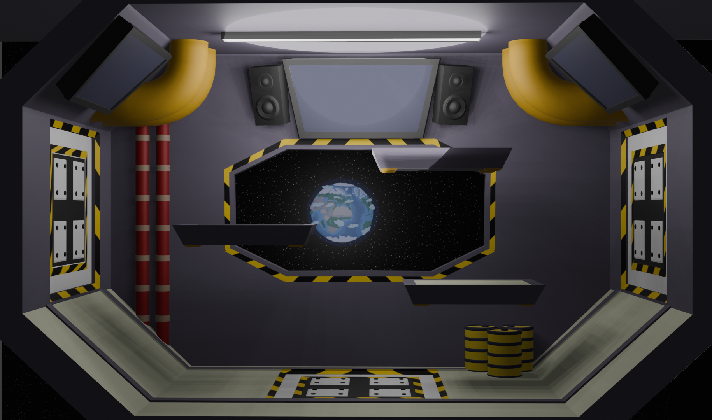

Airlock is a platform-based arena fighting game with the goal of knocking opponents out of the arena in a similar vein to the Super Smash Bros series of games. Players are convicts on a space prison station where they must defeat opponents to earn cash to buy their freedom. They do this by slamming their opponents into the walls of the space station to break them, which causes a decompression, or “breach event” which sucks out their opponent into space. The game revolving around platform-fighting moving on a 2D plane in a 3D environment. A round lasts 90 seconds, and should there be more than one surviving player, all surviving players are pulled to the top of the arena to compete in a race to the bottom.
This is a group project, with a team consisting of a team leader, three coders, and two 3D asset designers who also acted as concept artists. My role in this project is main 3D artist/major asset designer, as well as partially a concept artist. I am responsible for creating the arena that the game is set in, the platforms, destructible walls as well as the player models and some other minor assets. A list of minor/small assets were drafted to be handled by the other members of the team as well.
Concept art made by me for this project is drawn using the free art program Krita. The 3D assets for this project are made using Blender and are placed into Unity. Communication was performed through Discord, where targets/objectives for each team member were located. As this project required asset sharing, the group decided on using Github.
The project took inspiration from several game sources, notably Super Smash Bros, the low-poly game Gang Beasts and the indie 2D fighting game Stick Fight: The Game. These provided a good idea of what a map layout for this kind of game would look like.
For characters, the team decided to use the Gang Beasts style of blob-like characters with very simple features i.e. white circular eyes, round sphere for a head, low-detail clothing. The art style of the arenas was also based on the Gang Beasts look as finding space station interior concept arts usually yielded very highly detailed results that did not fit the style of the characters and would not fit the simpler tone of the game. I had thought about AI generating some concepts for a fighting arena or a style I could follow, but that also yielded no results I liked.
Two Gang Beasts maps in particular, Grind and Chute, fit the idea of a prison/facility, and I took heavy inspiration from both for the environment of the arenas.
 



For the player characters, there were two sketches. The original, where I figured out the body proportions, and a second by the other 3D asset designer/concept artist. I decided to try and follow the second character sketch as closely as I could for the clothing. Prisoner jumpsuits are usually very plain already, and players wouldn’t be able to see much of the detail of the characters in the first place, as the camera won’t zoom in close enough.

The base for the Prisoner/Fighter characters controlled by the player. It is made using the skin modifier and the subdivision surface modifier applied onto vertices in the shape of a stickman, then shaded smooth to give it a blob-like appearance. The blob-like simplistic character design is intentionally very cartoony, evoking a semi-silly Totally-Accurate-Battle-Simulators feel. Although not the first time I have handled character modelling, this was the first time I had made a character’s clothing and boots separate from their body. The character would be animated using the free animation website Mixamo, giving it basic animations for walking, jumping, running and idling, as well as fighting.


From there the character would have its clothing made by copying part of its chest, legs and feet, slightly enlargening them and then using the solidify modifier to give it thickness.

After the character was created, I next focused on making the arena for the game. As a testing bed for making the arena, I created an initial 3D mock-up based on one of the concept sketches by the other concept artist of what a small arena could look like, visualised through Blender.
 

Using the previous sketch and model as a guideline, I sketched out a large arena, consisting of three easily visible destructible wall panels between the indestructible walls, as players then have a chance not to immediately be ejected after being struck into a wall.

The idea for this sketch was inspired by the level Isolation from the 2013 Flash game Strike Force Heroes 2, which influenced the more angular design as opposed to the arena being a rectangle or square, as well as the destructible wall/chute on the floor. I believed it would give some variety, even if slight, to the environment allowing players to bounce off the slopes should they be hit into it.

For the map, there would be plenty of piping to give off a industrial feel to the space station. A TV screen would be included to suggest that fights like this were being broadcasted to the rest of the station (and or planet), presumably as entertainment.
This sketch toys with the idea of a destructible ground panel, possibly from a ground-slam attack or a player hitting the weak point of the structure too fast and ejecting them into space. The sketch also included the idea of destructible platforms, although after consulting with the coders, we decided that, while a good idea on paper, wasn’t necessarily an important immediate addition to the first arena.

The second sketch shows a breach event, where a player is ejected from the station into the vacuum of space, and repair drones move in to seal the breach. Also, note the destroyed floating platform, following on with the idea of destructible platforms. I proposed the idea of a possible sound/alarm system in the breach event, although realistically you wouldn’t be able to hear it in a vacuum.
Another idea dabbled with in the sketch (although not labelled) is a detailed background environment outside of the walls and window of the arena. At this point in the development, there wasn’t any talk of any backgrounds outside of maybe a pitch-black background to suggest the void of space. This raised the topic of a possible parallax background – where there would be multiple layers of images over the other that move when the player does. The further back an image is, the slower it moves giving the illusion of distance and space. Although not a major detail, would help immerse the player in the idea that they are onboard a space station that is in orbit of a celestial body, rather than just in a pitch-black nothingness that gives the player no reference of scale and distance.
One important question I had to tackle was how to make the background. Additionally, whether to give the background a planet, and whether to make it 3D which would fit the rest of the 3D style of the arena but risk distraction the player, or 2D so it blends better with the rest of the background.

I was torn between just using a simple black background or having stars dotting the empty space. The stars are made in three layers: the top layer is most visible layer contains the largest stars, and the two layers below it become progressively more transparent, with the stars becoming more numerous and smaller to give the illusion of distance. To achieve the parallax effect, each of these layers would be saved separately and exported into unity and setup with a script, although I never got this far.

Four sketches of the destructible-wall, and what they could look like. Although originally meant to just be a simple wall design, I wanted the destructible walls to be distinct from the surrounding walls and stand out.
For environmental/visual reasons, the idea here is that these walls are designed in a way suggesting that they are expected to be broken (purposefully fragile as prisoner disposal via vacuum could very much be endorsed by the station), therefore having yellow-black warning stripes surrounding or overlapping it shows that is where contestants much strike their targets to cause a breach event. As for gameplay reasons, each of these designs are meant to stand out, so they are easily recognisable as weak points in the station’s wall structure, signalling to players where they must hit their opponent and where they must avoid standing near.

I decided to make my own warning stripes texture using paint.net, as I could make the texture any size I wanted and preserve its quality.

The colourless prototype model of the large arena ported into unity, with working player movement script. Although the arena was originally much bigger (with assumptions of huge player counts), after client and other project member feedback and suggestions, the size was significantly scaled down to a scale more akin to a Smash Bros arena.
The only interactable things in the arena are two platforms and Maps for example in Super Smash Bros. series are often quite simplistic with few platforms (sometimes only two) that are spread out decently to give players space to move around on the ground without bumping into the platforms.
During testing of the prototype map in the unity, I found that the character often found themselves unable to actually touch the ground. As a single round of Airlock only lasts up to a minute, I concluded that it was superior having maps (specifically the space where players can move around) not being heavily cluttered allowing for more freedom of movement. I realised the platforms needed be made slightly smaller and arranged in a pattern that would allow players to slip through them onto the arena ground without getting caught on the ends. The map shape ended up not very suitable for the end-of-round racing-to-the-bottom mechanic as a result of its wideness and its lack of vertical height.

I experimented with the beige-wall look like that of the two Gang Beasts maps the arena had been inspired by, but decided the colours look too muted and similar, making the arena feel empty. The destructible walls made extensive use of the mirroring modifier to save time making the panels and their screws.

One of the minor assets for the player to use, the grapple hook gun. The grapple hook gun serves to aid player movement as one of the items they come equipped with. As an already small asset on the left side of the player, I elected to keep the grapple hook gun simplistically detailed.

The prisoner character model. Following the concept art, the character’s sleeves are ripped to show wear and damage from participation in the fighting. The colours were inspired by real prison jumpsuits (Being predominantly orange with typically black shoes), as I thought any other colours wouldn’t be able to evoke the “space prisoner” feel.

The large arena, assembled together with the complete platforms, barrels and destructible walls. Additional monitors were added to either side of the roofs to give the feel that the players are in a fighting arena being broadcasted live.
Hampered heavily by burnout, I find myself dissatisfied with the final iteration of the arena, as it isn’t as refined as I’d like it to be, with plenty of spaces lacking detailing and feeling rather empty, like the slopes for example and the roof, and the smaller themselves being rather simplistic without any detailing to them. Additionally, I hadn’t tried to explore any new techniques with this project, for example not getting around to exploring how to make the parallax background.